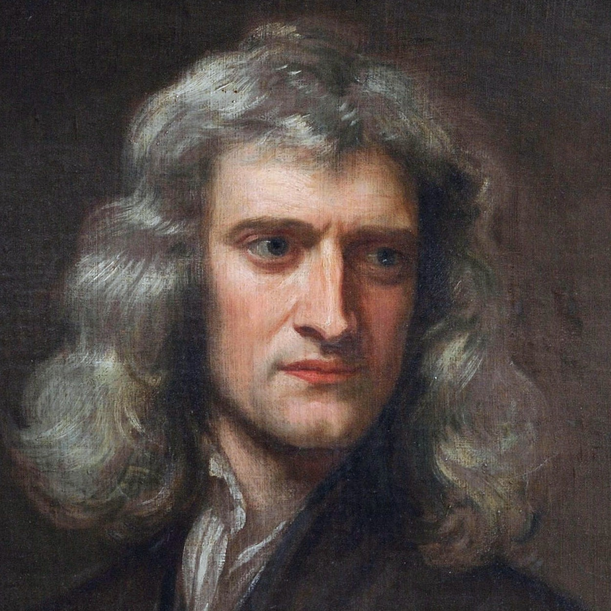
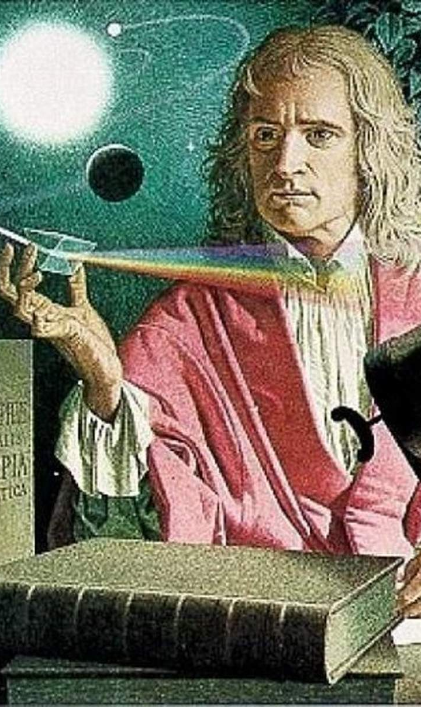
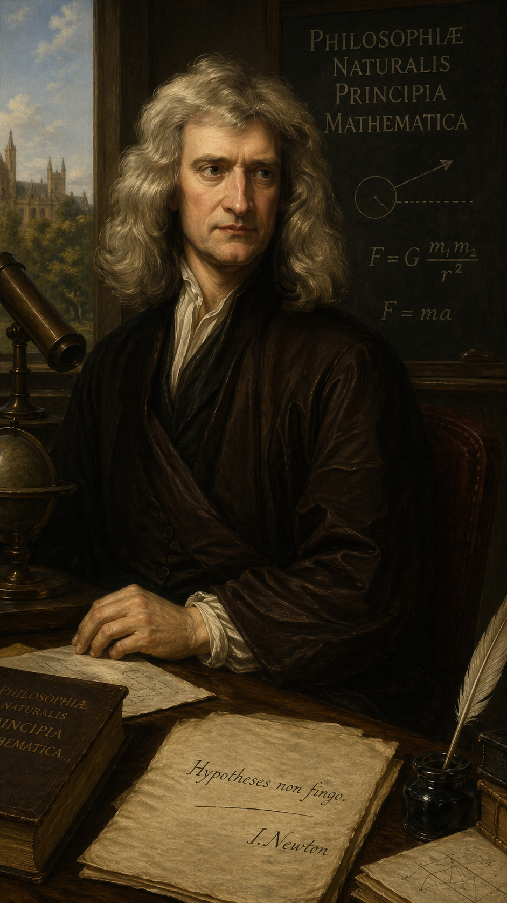

Felhasználónév: lawOfMotionGuy
Foglalkozás: Fizikus
Hobbik: Szeretek a fák alatt könyveket olvasni
1642-ben születtem december 25-kén Woolsthorpe Manorban. Tizenkét évesen már beiratkoztam egy tíz mérföldre lévő gimnáziumba. Williamnál laktam, aki egy gyógyszerész volt. Ekkor még nem igazán érdekelt a matematika, és ez a jegyeimen is meglátszott. De új motivációt tatáltam, miután az iskolám egyik tanulója belém kötött, és megrúgott. Én miután a sok sarat kaptam a családban, a feltartott düh kijött belőlem, és a templom falán véresre horzsoltam arcát, de nem csak testileg, hanem szellemileg is meg akartam alázni, ez alapján én lettem a legjobb tanuló. Egy jó ideje a fejemre esett egy alma, miközben egy almafa alatt olvastam. Eleinte csak fogtam a fejemet, de egy pár perc elteltével ahhoz a feltevéshez jutottam, hogy miért esik az alma mindig a földre? Miért nem oldalra vagy felfelé esik, hanem mindig a föld középpontja felé? Erre a konklúzióra jutottam: minden földi tárgyat és égitestet mozgató erő ugyan az.

